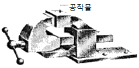
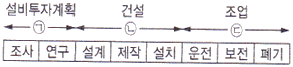
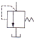
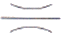
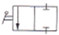
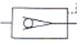
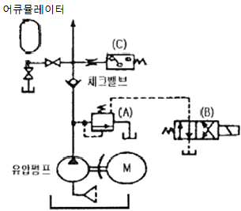

설비보전기능사 (2016-01-24 기출문제)
1과목: 기계보전 일반(대략구분)
1. 운전 중 베어링에 발생하는 윤활 고장을 검지할 수 있는 것으로 베어링의 그리스 윤활상태를 측정하는 기구는?
- 콘 프레스(Cone Press)
- 그리스 펌프(Grease Pump)
- 베어링 체커(Bearing Checker)
- 핸드 버킷 펌프(Hand Bucket Pump)
(정답률: 80%)

2. 다음 중 마찰력으로 동력을 전달시킬 수 있는 전동용 요소는?
- 벨트(Belt)
- 펌프(Pump)
- 기어(Gear)
- 체인(Chain)
(정답률: 76%)
3. 관경이 비교적 크거나 내압이 높은 배관을 연결할 때 나사 이음, 용접 등의 방법으로 부착하고 분해가 가능한 관 이음쇠는?
- 신축 이음쇠
- 유니언 이음쇠
- 주철관 이음쇠
- 플랜지 이음쇠
(정답률: 62%)
4. 원심펌프에서 임펠러의 양쪽에 작용하는 수압이 같지 않아발생하는 추력을 줄여주기 위한 방법으로 적당한 것은?
- 흡입양정을 작게 한다.
- 임펠러의 직경을 증가시킨다.
- 임펠러의 직경을 감소시킨다.
- 임펠러에 밸런스 홀(Hole)을 뚫는다.
(정답률: 82%)
5. 설계 불량, 제작 불량 등에 의한 고장이 나타나는 기간은?
- 초기 고장기
- 우발 고장기
- 마모 고장기
- 중기 고장기
(정답률: 86%)
6. 축의 구부러짐을 현장에서 수리할 수 있는 공구는?
- 오스커
- 기어 풀러
- 짐크로
- 유압 풀러
(정답률: 92%)
7. 제3각법에서 정면도의 왼쪽에 배치되는 투상도는?
- 평면도
- 좌측면도
- 우측면도
- 저면도
(정답률: 90%)
8. 다음 중 제어 밸브의 종류에서 조작신호에 따라 분류한 것이 아닌 것은?
- 공기압식 제어 밸브
- 앵글 밸브
- 전기식 제어 밸브
- 유압식 제어 밸브
(정답률: 77%)
9. 기업 내에서 설비를 가장 유효하게 활용하여 기업의 생산성 향상을 도모하는 것은?
- 생산관리
- 설비보전
- 공장관리
- 공사관리
(정답률: 80%)
10. 공유압 밸브의 사용목적으로 가장 거리가 먼 것은?
- 유량제어
- 방향제어
- 압력제어
- 온도제어
(정답률: 82%)
11. 기계정비용 재료 중 접착제의 구비조건으로 옳지 않은것은?
- 액체성일 것
- 전기 전도성이 좋을 것
- 고체 표면의 좁은 틈새에 침투하여 모세관 작용을 할 것
- 도포 후 고체화하여 일정한 강도를 가질 것
(정답률: 84%)
12. 유압 펌프 운전 시 매일 점검 사항이 아닌 것은?
- 작동유의 점도를 점검한다.
- 배관의 연결부를 확인한다.
- 작동유의 유온을 점검한다.
- 오일탱크 속에 이물질이 있는지 확인한다.
(정답률: 48%)
13. 다음 중 사용압력이 0.1MPa 이상으로 높은 압력의 기체를 송출시키는 기기는?
- 압축기
- 송풍기
- 환풍기
- 통풍기
(정답률: 63%)
14. 다음 중 주로 대칭인 물체의 중심선을 기준으로 내부 모양과 외부 모양을 동시에 표시하는 단면도는?
- 한쪽 단면도
- 회전 단면도
- 계단 단면도
- 국부 단면도
(정답률: 66%)
15. 관용 기계요소의 제도 시 유체의 표기가 틀린 것은?(오류 신고가 접수된 문제입니다. 반드시 정답과 해설을 확인하시기 바랍니다.)
- 공기 : A
- 가스 : G
- 기름 : L
- 증기 : S
(정답률: 85%)
16. 배관도를 표시할 때 기호와 굵은 실선을 사용하여 파이프,파이프 이음, 밸브 등의 배치, 부착품 등을 나타내는 단선도시법이 아닌 것은?
- 등각 배관도
- 복선 배관도
- 투상 배관도
- 스케치 배관도
(정답률: 47%)
17. 고온의 유체가 흐르는 관의 팽창 수축을 고려하여 축 방향으로 과도한 응력이 발생하지 않도록 한 관이음 방법은?
- 용접 이음
- 나사형 이음
- 신축 이음
- 플랜지 이음
(정답률: 67%)
18. 입력축과 출력축에 드라이브 콘(Drive Cone)을 비치하고,그 바깥 가장자리에 강구를 접촉시킨 형태의 변속기는?
- 가변 변속기
- 디스크 무단 변속기
- 링 콘 무단 변속기
- 컵 무단 변속기
(정답률: 57%)
19. 부러진 볼트를 빼내기 위해서 사용하는 공구는?
- 조합 스패너
- 테이퍼 핀
- 임팩트 렌치
- 스크루 엑스트랙터
(정답률: 77%)
20. 윤활유의 열화 방지책으로 옳지 않은 것은?
- 고온은 가급적 피한다.
- 자주 혼합하여 사용한다.
- 새 기계는 세척 후 사용한다.
- 교환 시 열화유를 완전히 제거한다.
(정답률: 86%)
2과목: 설비관리(대략구분)
21. 3상 유도전동기의 점검 내용 중 육안으로 점검할 수 없는 것은?
- 기름 누설
- 부하전류의 헌팅
- 도장의 벗겨짐 및 오손
- 베어링유의 더러움이나 변질 여부
(정답률: 84%)
22. 송풍기 분해 시 점검사항에 해당되지 않는 것은?
- 송풍기 임펠러의 마모상태 점검
- 송풍기 케이싱의 누설 및 이음 점검
- 송풍기 내부의 퇴적물 부착상태 점검
- 샤프트 저널부의 접촉여부 및 박리상태 점검
(정답률: 48%)
23. 그림과 같은 기계 바이스의 나사로 가장 적절한 것은?

- 볼나사
- 삼각나사
- 둥근나사
- 톱니나사
(정답률: 70%)
24. 설비의 설계속도와 실제 움직이는 속도와의 차이에서 발생하는 로스(Loss)는?
- 초기 로스
- 수율 로스
- 속도 로스
- 정체 로스
(정답률: 85%)
25. 설비관리의 목표인 기업의 생산성을 나타내는 척도는?
- 산출 / 투입
- 투입 / 산출
- 수익 / 투자액
- 생산량 / 보전비
(정답률: 59%)
26. 만성 로스의 특징 중 옳은 것은?
- 단순 요인이 발생된다.
- 발생 원인은 바꿔지지 않는다.
- 숨어 있는 요인은 무시하고 돌출된 요인만 해석한다.
- 원인은 하나지만 원인이 될 수 있는 것은 수 없이 많다.
(정답률: 74%)
27. 설비의 6대 로스에 속하지 않은 것은?
- 고장 로스
- 계획정지 로스
- 준비 · 조정 로스
- 속도 저하 로스
(정답률: 64%)
28. 자주보전의 추진 방법에 대한 설명 중 틀린 것은?
- 활동판의 활용 – 활동내용과 계획진도표 등을 기록
- 진단 실시 – 단계마다 수준의 진단을 받은 후 합격 시 다음 단계로 이행
- 직제 지도형 조직 – 자주적 대집단 활동을 전개하며 팀원의 참여가 가장 중요
- 단계(Step)방식으로 진행 – 우선 한 가지 일을 철저히하고, 수준 도달 후 다음 단계로 이행
(정답률: 64%)
29. 계측관리를 추진하는데 필요한 사항으로 가장 거리가 먼 것은?
- 기업 목적의 명확화
- 계측기에 관한 요건을 명세서에 기입
- 기업 운영의 과학적 합리적 방침 수립
- 계측관리, 정보자료 관리 등유기적인 결합 추진
(정답률: 51%)
30. 설비의 열화 측정 검사에서 양부 검사에 해당되는 열화형은?
- 사후 정지형
- 기능 정지형
- 돌발 고장형
- 성능 저하형
(정답률: 55%)
3과목: 공유압 일반(대략구분)
31. 다음 그림은 설비관리의 Life Cycle을 설명한 것이다. 이 중 넓은 의미의 설비관리를 정의한 것은?

- ㉠, ㉢
- ㉠, ㉡
- ㉡, ㉢
- ㉠, ㉡, ㉢
(정답률: 70%)
32. 가공공작 공정 또는 조립작업 공정에 있어서 지정된 작업을 용이하게 수행할 수 있도록 하기 위해서 피공작물과 공구로 소정의 위치 관계를 유지시켜 공구를 안내할 수 있도록 설계된 구조를 갖는 도구는?
- 절삭구
- 금형
- 검사구
- 지그 고정구
(정답률: 63%)
33. 설비의 특정 운전조건을 유지시키기 위해서 수행되는 모든 보전계획의 전형적인 보전 활동은?
- 개량보전
- 사후보전
- 예방보전
- 종합적 보전
(정답률: 46%)
34. 설비보전의 직접적인 기능으로 가장 적합한 것은?
- 설비검사
- 정비계획
- 고장분석
- 정비기록
(정답률: 76%)
35. 유틸리티 설비가 아닌 것은?
- 발전 설비
- 공장의 관리 설비
- 연료저장 수송설비
- 증기 발생 장치 및 그 배관 설비
(정답률: 43%)
36. 소재를 가공하여 원하는 형상으로 만드는 공작 작업에 사용하는 도구는?
- 공구
- 금형
- 연료
- 검사구
(정답률: 58%)
37. 소품종 대량생산에 적합하며 단순 반복 흐름 생산작업 방식은?
- 공정별 배치
- 혼합형 배치
- 제품별 배치
- 기능별 배치
(정답률: 58%)
38. 설비보전의 효과가 아닌 것은?
- 보전비가 감소한다.
- 제작 불량이 적어진다.
- 가동률이 낮아진다.
- 설비 고장으로 인한 정지 손실이 감소한다.
(정답률: 80%)
39. 설비종합효율을 잘 설명한 지표는?
- 가동률 × 부하시간 × 조업률
- 시간가동률 × 성능가동률 × 양품률
- 가동시간 × 부하시간 × 정지로스율
- 성능로스율 × 정미시간 가동률 × 부하시간율
(정답률: 72%)
40. 다음 중 가장 높은 압력에서 사용하는 유압 펌프는?
- 나사 펌프
- 기어 펌프
- 베인 펌프
- 플런저 펌프
(정답률: 44%)
41. 회로압이 설정압을 넘으면 막이 파열되어 압유를 탱크로 귀환시켜 압력 상승을 막아 기기를 보호하는 역할을 하는 것은?
- 유체 퓨즈
- 감압 밸브
- 방향제어 밸브
- 파일럿 작동형 체크 밸브
(정답률: 57%)
42. 공기탱크 압력이 최고압력을 초과하면 기기를 손상시키거나 필요 이상의 출력이 생긴다. 어느 한도 이상으로 압력이 상승하면 이를 대기에 방출시켜 압력을 내리는 역할을 하는 밸브는?
- 감압 밸브
- 시퀀스 밸브
- 릴리프 밸브
- 언로드 밸브
(정답률: 47%)
43. 다음 중 릴리프 밸브를 나타내는 기호는?




(정답률: 79%)
44. 다음 중 공기 건조기의 종류가 아닌 것은?
- 냉동식 건조기
- 흡착식 건조기
- 공랭식 건조기
- 흡수식 건조기
(정답률: 59%)
45. 다음 중 압력의 단위가 아닌 것은?
- atm
- psi
- mol
- Pa
(정답률: 68%)
46. 실린더 로드가 전·후진 운동 시 간헐적 동작이 일어나는 현상은?
- 플립 플롭
- 스틱 슬립
- 캐스케이드
- 오버라이드
(정답률: 53%)
47. 다음과 같은 유압회로의 언로드 형식은 어떤 형태로 분류되는가?

- 탠덤센서에 의한 방법
- 언로드 밸브에 의한 방법
- 바이패스 형식에 의한 방법
- 릴리프 밸브를 이용한 방법
(정답률: 58%)
48. 유압 실린더에서 얻을 수 있는 힘(F)은 F = A × P로 표현할 수 있다. A와 P가 의미하는 것은?
- A: 유량, P : 속도
- A: 단면적, P : 압력
- A: 단면적, P : 파이프 길이
- A: 펌프의 종류, P : 펌프의 길이
(정답률: 73%)
49. 회로의 일부에 배압을 발생시키고자 할 때 사용하는 밸브로써 한 방향의 흐름에 대해서는 설정된 배압을 부여하고 다른 방향의 흐름은 자유흐름을 행하는 밸브는?
- 브레이크 밸브
- 디플레이션 밸브
- 카운터밸런스 밸브
- 파일럿 릴리프 밸브
(정답률: 71%)
50. 작동유가 장치 내에서 할 수 있는 기능으로 가장 거리가 먼 것은?
- 열 흡수
- 유압기기의 윤활
- 동력의 전달기능
- 기기의 강도 증가
(정답률: 70%)
4과목: 산업안전(대략구분)
51. 셔틀 밸브에 관한 설명으로 옳은 것은?
- OR 밸브이다.
- AND 밸브이다.
- 압력을 일정하게 유지시키는 밸브이다.
- 입력과 상반되는 출력을 내보내는 기능을 가진 밸브이다
(정답률: 62%)
52. 다음 중 압력제어 밸브에 해당되지 않는 것은?
- 니들 밸브
- 릴리프 밸브
- 언로드 밸브
- 압력 시퀀스 밸브
(정답률: 63%)
53. 다음 중 유체가 얼마나 압축되기 어려운가를 나태는 것은?
- 점성계수
- 약적탄성계수
- 동점성계수
- 체적탄성계수
(정답률: 62%)
54. 기계설비의 안전화를 위한 고려사항이 아닌 것은?
- 작업의 안전화
- 지능적 안전화
- 창조적 안전화
- 외관상의 안전화
(정답률: 61%)
55. 용해 아세틸렌 취급 시 주의사항으로 틀린 것은?
- 저장 장소에는 화기를 가까이 하지 말아야 한다.
- 용기 40℃ 이하에서 보관한다.
- 아세틸렌 충전구의 동결 시는 40℃ 이상의 온수로 녹여야 한다.
- 저장 장소는 통풍이 잘 되어야 한다.
(정답률: 71%)
56. 다음 중 안전모의 성능시험의 종류에 해당하지 않는 것은?
- 외 관
- 내전압성
- 난연성
- 내수성
(정답률: 70%)
57. 가스 절단기 및 토치의 사용에 관한 설명으로 옳지 않은 것은?
- 토치의 점화는 토치 점화용 라이터를 사용한다.
- 토치에 기름이나 그리스를 바르지 않는다.
- 팁을 청소할 때에는 반드시 팁 클리너를 사용한다.
- 토치가 가열되었을 때는 산소를 잠그고 아세틸렌만 분출시킨 상태로 물에 식힌다.
(정답률: 79%)
58. 연삭작업을 할 때 유의하여야 할 사항으로 옳지 않은 것은?
- 연삭작업은 숫돌의 측면에 서서 한다.
- 연삭기에는 반드시 안전 덮개를 설치하여야 한다.
- 숫돌 바퀴와 받침대 사이의 간격은 8mm 이내로 한다.
- 연삭숫돌의 회전 속도는 규정 이상으로 빠르게 하지 않는다.
(정답률: 62%)
59. 선반작업 시 안전사항으로 틀린 것은?
- 기계 위에 공구나 재료를 올려놓지 않는다.
- 바이트 착탈은 기계를 정지시킨 다음에 한다.
- 이송을 건 채로 기계를 정지시키지 않는다.
- 칩을 제거할 때는 맨손을 사용한다.
(정답률: 83%)
60. 사다리식 통로에 대한 설명으로 틀린 것은?
- 견고한 구조로 한다.
- 폭은 15cm 이상으로 한다.
- 재료는 부식이 없는 것으로 한다.
- 사다리 밑에는 미끄럼 방지를 한다.
(정답률: 82%)